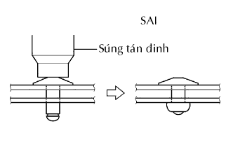

LOA PHÍA SAU > LẮP |
| 1. LẮP CỤM LOA NO.1 SAU TRÁI |
Lắp loa phía sau vào cửa.
 |
Dùng dụng cụ tán đinh khí nén hoặc loại thường, hãy lắp loa phía sau bằng 3 đinh tán mới.

|  |
Lắp giắc nối.
| 2. LẮP ỐP TRANG TRÍ CỬA SAU TRÁI |
 |
Cài khớp 10 kẹp để lắp ốp cửa.
| 3. LẮP ĐẾ PHÍA TRÊN TỰA TAY TRÊN CỬA SAU TRÁI |
| 4. NỐI CÁP VÀO CỰC ÂM ẮC QUY |
| 5. TIẾN HÀNH THIẾT LẬP BAN ĐẦU |
Tiến hành thiết lập ban đầu (Xem trang Kích chuột vào đây).